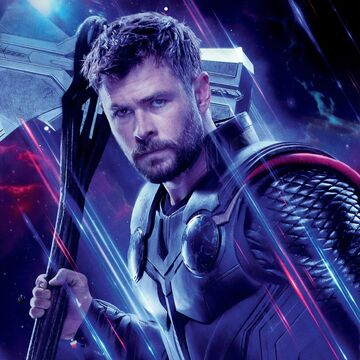

Thor
is a 2011 American superhero film based on the Marvel Comics character of the same name. Produced by Marvel Studios and distributed by Paramount Pictures,[N 1] it is the fourth film in the Marvel Cinematic Universe (MCU). It was directed by Kenneth Branagh, written by the writing team of Ashley Edward Miller and Zack Stentz along with Don Payne, and stars Chris Hemsworth as the title character alongside Natalie Portman, Tom Hiddleston, Stellan Skarsgård, Colm Feore, Ray Stevenson, Idris Elba, Kat Dennings, Rene Russo, and Anthony Hopkins. After reigniting a dormant war, Thor is banished from Asgard to Earth, stripped of his powers and his hammer Mjölnir. As his brother Loki (Hiddleston) plots to take the Asgardian throne, Thor must prove himself worthy.
Sam Raimi first developed the concept of a film adaptation based on Thor in 1991, but soon abandoned the project, leaving it in "development hell" for several years. During this time, the rights were picked up by various film studios until Marvel signed Mark Protosevich to develop the project in 2006, and planned to finance and release it through Paramount. Matthew Vaughn was assigned to direct the film for a tentative 2010 release. However, after Vaughn was released from his holding deal in 2008, Branagh was approached and the film's release was rescheduled to 2011. The main characters were cast in 2009, and principal photography took place in California and New Mexico from January to May 2010. The film was converted to 3D in post-production.